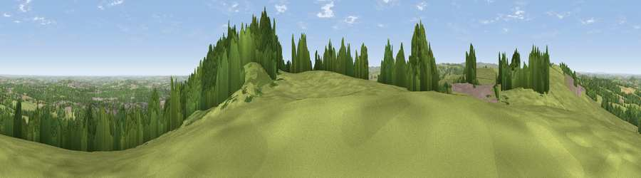

Viewpoint near Whitley
#4143 in England · top 1% of its area beats it · near WhitleyThe view, rendered

A 360° render of this exact spot computed from the terrain model, tree cover and land cover — summer colours, afternoon light, calibrated against photographs of famous viewpoints. Real trees, hedges and buildings will differ in detail.
The panorama
Grey silhouette: terrain skyline in each direction (720 bearings, Earth curvature and refraction included). Dashed green: skyline with trees (+15 m) and buildings (+8 m) as obstacles. Blue strip: how far the ground is visible on each bearing.
Where the view opens
Wedge length = distance to the farthest visible ground on that bearing (vegetation-aware). Rings at 10, 25 and 50 km.
What fills the view
49% grassland · 33% woodland · 9% built-up · 8% cropland
Angular shares of the visible panorama (visual magnitude), not map area. Landscape diversity 0.50 (0–1 Shannon).
Key numbers
More beautiful places nearby
The staircase of upgrades: each row has a higher view potential than everything closer. Driving times are estimates from straight-line distance, calibrated against real road routing — check an actual route before setting out.
| Place | Direction | Drive | Score |
|---|---|---|---|
| Viewpoint near Wharncliffe Side | NW · 1 km | ~3 min | 75.2 |
| Viewpoint near Greenfield | WNW · 33 km | ~50 min | 76.0 |
| Viewpoint near Carrbrook | W · 33 km | ~51 min | 77.1 |
| Viewpoint near Otley | NNW · 50 km | ~71 min | 77.5 |
| Viewpoint near Mow Cop | SW · 60 km | ~82 min | 78.9 |
| Viewpoint near Mow Cop | SW · 60 km | ~83 min | 80.2 |
| White Brow | WNW · 68 km | ~91 min | 82.9 |
| Beacon Hill | N · 105 km | ~129 min | 84.7 |
53.45814, -1.51619 · source: osm viewpoint · position refined by local search. Computed location — check access rights before visiting.